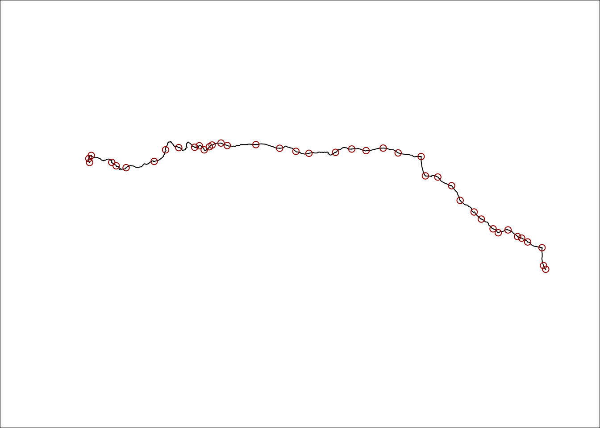
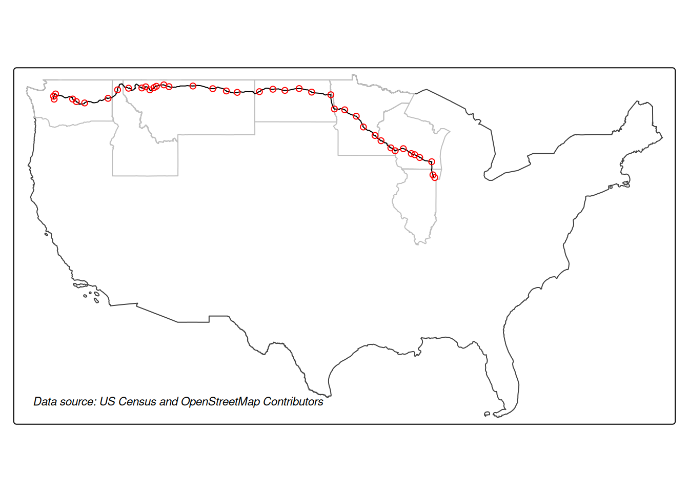
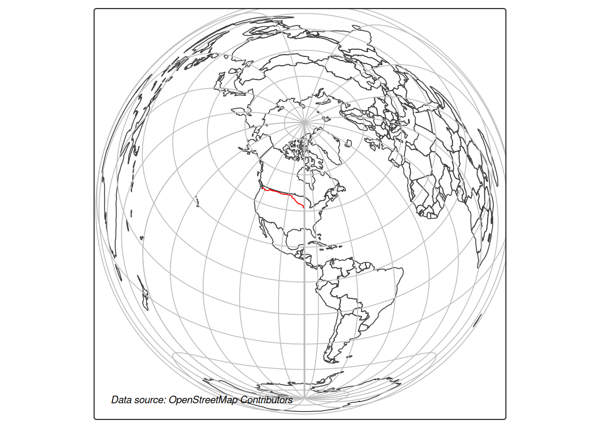

Show the code
[out:json][timeout:120];
(
relation(1809794);
node(r);
way(r);
);
out body;
>;
out skel qt;Olivier Leroy
May 6, 2025
The Empire Builder is a train that travel from Chicago to Seattle (or Portland). I was lucky to take it few years ago, never get time to blog about it, but recently David Lawrence Miller made a really nice mastodon thread about it that nudged me to slowly collect back my notes and do this little post and spread more Amtrack love (or just train travel)!
It takes two days and a half to do the trip. At that time you did not have WIFI (is it still the case?), perfect to relax with books, a computer and all the man pages that you never fully read or simply go to the scenic wagon to be amazed by the badlands, the Mississippi river, Montana’s mountains and a huge sample of a lot of backyards in this part of America.
We had the opportunity to get a really good price on the small private “cabine”. If you can get one I highly recommend it. My only regret is that we did not know that you can take an Amtrack pass that allow you to stop somewhere and board on other next trains.
I think it is a great way to discover a big part of the US.
Here, I will try to do a bit of data analysis, visualization and share some pictures displaying the various landscapes and experiences you can get.
Nothing fancy, just some numbers and maps using good ol´base R.
The fist step is to get the stops and the path that the train uses. I went with OpenStreetMap (OSM) because OSM contributors are awesome and I trust their data.
If you explore a bit OSM, you can find the OSM’s relation for the Empire Builder: Chicago to Seattle Here. I went with a classic overpass turbo query. You need all the node and maybe way that are with that relation. I used the export option from overpass since I failed to reproduce the export with osmtogeojson (OSM json uses an other way to represent data than geojson).
I also wrote a bit about overpass since I am an huge fan but I always need to read the doc of overpass API
The geojson can be accessed in a personal R package here.
We have now a geometry collection with points and a multilinestring. I usually prefer to keep one geometry type per layer. I will split stations and the train track then put then in list, basically “faking” a geometry collection in list instead of one table. I will also remove some duplicated information.
read_wrangle <- function(path_geosjon, quiet = FALSE) {
empire_raw <- sf::st_read(path_geosjon, quiet = TRUE)
# sticky geometry and specify what I need
empire_slim <- empire_raw[, c("id", "name",
"network", "public_transport",
"railway.ref")]
# store in list so each elements is a unique sf type
empire <- list(
track = sf::st_collection_extract(empire_slim, type = "LINESTRING"),
stations = sf::st_collection_extract(empire_slim, type = "POINT")
)
if (!quiet) message(sprintf("CRS is %s", sf::st_crs(empire_raw)$input))
return(empire)
}To make my life a bit easier in this post I loaded that data set in a small package.
I like doing a quick map first:

This is not the greatest map but I like how it could look like a transect. Biogeographers since long time ago1 used transect and I think it is an underused way of sampling or doing some storytelling!
We have 41 stations2 for 3553.33 km.
First let’s get some states layers and see if we can bring a bit of context. I used US Census data, directly with their old school FTP. GDAL is really amazing and the virtual file systems that it provides really simplify a lot. {sf} integrates quite well with it.
state_zip <- "/vsizip//vsicurl/https://www2.census.gov/geo/tiger/TIGER2024/STATE/tl_2024_us_state.zip"
# quick look:
# system(sprintf("ogrinfo %s", state_zip))
q <-
"select
REGION as region,
DIVISION as division,
STATEFP as geoid_st,
NAME as name
from
tl_2024_us_state
order by STATEF`
"
us_states <- sf::read_sf(state_zip, query = q)For my convenience, I think I will re-use States boundaries and I want to avoid downloading the data every time quarto process the file I also stored that logic and the data in a package (the same mention above).
Since I was interested in “continental” US I filtered US territories Hawaii and Alaska. I also tried {tmap} to change a bit. So far I am still a bit lost between the version 3 and 4 but I like end results.
us_states <- btl.data::us_states
# sorry Alaska, Hawaii and US territories (I will bring you back later)
nop_states <- c("02", "15", "60", "66", "69", "72", "78")
quick_index <- us_states$geoid_st %in% setdiff(us_states$geoid_st, nop_states)
us_limited <- us_states[quick_index,]
us_limited_border <- sf::st_union(us_limited$geometry)
# converting to the same CRS
NAD83 <- sf::st_crs(us_states)
rail.shp <- sf::st_transform(empire$track, NAD83)
stations.shp <- sf::st_transform(empire$station, NAD83)
# just the states crossed by the train
eb_states <- us_limited[rail.shp,]
tm_shape(us_limited_border) + tm_borders() +
tm_shape(eb_states$geometry) + tm_borders(col = "grey") +
tm_shape(rail.shp$geometry) + tm_lines() +
tm_shape(stations.shp$geometry) + tm_symbols(shape = 1, col = "red", size = .4) +
tm_credits("Data source: US Census and OpenStreetMap Contributors", fontface = "italic", position = c("left", "bottom"))
I also wanted to display that the Empire Builder in a “world perspective”! Yes this quite a long trip!
wrap_st_transform <- function(x) {
my_proj <- "+proj=laea +x_0=0 +y_0=0 +lon_0=-87 +lat_0=41.5 +ellps=WGS84 +no_defs"
sf::st_transform(x, my_proj)
}
w_filepath <- system.file("shapes/world.gpkg", package = "spData")
world <- sf::read_sf(w_filepath) |> wrap_st_transform()
# I stole that code for the excellent: https://r.geocompx.org/reproj-geo-data#mapproj
# I like it more than the graticule argument in plot method for sf
world_laea2_g = sf::st_graticule(ndiscr = 10000) |>
wrap_st_transform() |>
sf::st_geometry()
# plot(world$geom)
# plot(world_laea2_g, col = "grey", add = TRUE)
# plot(wrap_st_transform(rail.shp$geometry), col = "darkred", add = TRUE, lwd = 3)
# box(which = "figure")
tm_shape(world$geom) + tm_borders() +
tm_shape(world_laea2_g) + tm_borders(col = "grey") +
tm_shape(wrap_st_transform(rail.shp$geometry)) + tm_lines(col = "red") +
tm_credits("Data source: OpenStreetMap Contributors", fontface = "italic", position = c("left", "bottom"))
I feel this trip provided me with a lot of insight of what is the “backyard of America” (I stole that from one of the other passenger). But I wanted to see if I can get a bit more with basic counties’s data?
TODO a ref↩︎
To be fair when I double checked if I had the correct number of stations I saw one missing. I updated it here: https://www.openstreetmap.org/changeset/166178195#map=19/48.276431/-116.545626↩︎